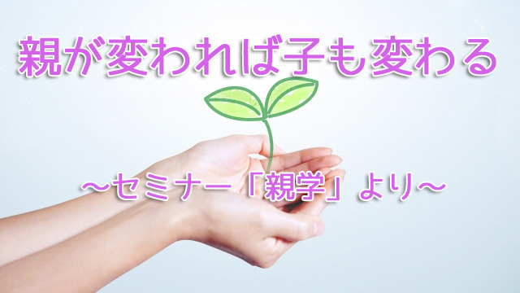
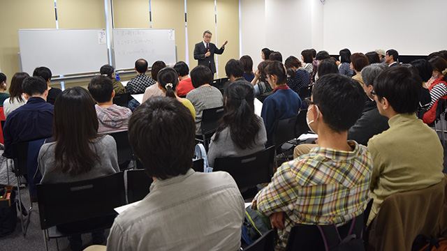
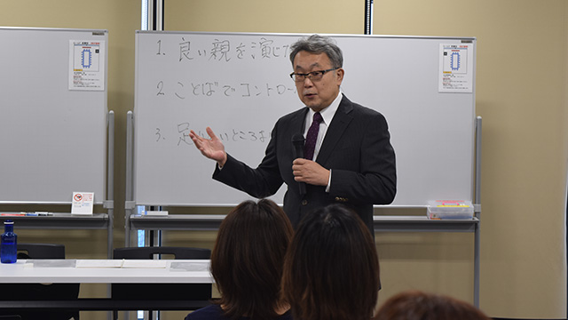

子どもの姿勢を変えたいと望む親が多い。
「もっと熱心に勉強するようにしたい」
「ダラダラとゲームばかりしないで規則的に生活して欲しい」
「言われなくても自分からやる子にしたい」
しかし変えたいと思っている時点でそれは無理な相談だ。我が子といえど他人に違いない。他人を変えることは基本的にできないからだ。
いくらそう言っても多くの親―特にお母さんたち―は納得いかない表情をする。
「だってこのままじゃ将来不安じゃないですか」というわけだ。我が子の将来を思うとみすみす今の困った現状を見逃すわけにはいかないと考えるのだろう。
そうしてアレコレうるさく注意したり叱ったり説教したりするが、子どもの改善には結びつかない。そこで焦って益々うるさく言う。そんなループ（繰り返し）に陥っている親の何と多いことか。
「子どもに勉強しろとうるさく言うとかえってやらなくなりますよ」と私などが言うと、お母さんたちの中には「これからはなるべくうるさく言わないように気をつけます」と殊勝に語る人もいるが、これまた「言わないようにする」と言ってる時点でアウトなのだ。心の中で思い切り言ってるわけだから。（親の心の声などビンビン子どもに伝わっている！）
「それではどうすればいいのですか？」
「ウチの子、うるさく言わないとますますやらないんですけど！」
そう不満顔で噛みつく親にはこう答えるしかない。
子どもを変えようとするな
変えようとする限り相手は変わらない。どうしても相手に変わって欲しければまず自分が変わるしかない。これは人間関係の鉄則である。誰でも知っているはずだ。それなのに多くの親はこの鉄則を忘れ子どもを変えようとする。親だから子どもを変える権利があると言わんばかりだ。もしそうならそれは親の傲慢というしかない。
いや傲慢じゃない、子を心配する故なのだというかも知れないがそれがまさに傲慢というものだ。相手がダメな奴だから心配して言ってやってるというのは上から目線以外の何物でもない。
子どもを変えたければ親が変わること。
（私はこれをペアレンツファーストと呼んでいる）
親は子どもをコントロールしようとせず（つまりコントロール欲求を手放し）自分のやるべきことに専念し自らに磨きをかけること。このほうが子どもの態度もずっと早く変わる。
これが実は先日（18日）のセミナー（親学）でも私が伝えたかったことの一つだ。

熱心に耳を傾けるセミナー参加者の皆さん （2018年11月18日(日)「親学第4弾」にて）
親が「自分」を生きると子どもも輝く
セミナーでは「我が子と良好な関係を築くための３つの方法」というタイトルで話したが、要は子どもをコントロールするなという主旨だった。

講師：管野淳一多くの親はあまりに良い親を演じようとしすぎる。良い親（立派な親）として子どもを社会で通用する立派な人間に育てようとしすぎている。そのガンバリが子どもの自由を制限し親の望む方向への誘導につながる。
親は「良かれ」と思ってやっていても、そのコントロールの圧力は子どもの可能性をせばめていることになかなか気づかない。それが私にはとても残念なことだと感じている。もっと子どもの才能や特性を認めて自由に行動させればいい。それが子どもを信用することであり将来の親子関係にも良い影響を及ぼすことになるからだ。
ここでひとつ重要なことを話したい。それは親が子どもについ口うるさく言ってしまうときは、親が自分自身に対して不満がありそれを子どもに投影している場合があるということだ。親子関係は鏡のようなものだ。親の潜在意識にある不満や焦りが子どもの不満な行動となって表れているともいえるのだ。
つまり子どもに言ってることは実は自分自身に言いたいことなのだ。にわかには信じられないかも知れないが、今度子どもに何か言おうとしたとき自分に問うてみて欲しい。
「これは自分に言いたいことではないのか」と。きっと何かに気づくだろうと思う。
子どもがゲームばかりするとか、友だちと遊びに行ってばかりだとかイライラし文句を言いたいなら、もしかすると自分こそが自由を求めているのではないか。もっとやりたいことや好きなことに時間を使いたいと望んでいるのではないか。つまりもっと自分自身を生きてみたいのではないかと自問することが必要だということだ。
そのように気づいて親が生き方を少し変えたらどうなるだろう。きっと子どもの行動にイラつくことも減るだろう。そして親が楽しそうに「自分」を生き始めたら不思議なことに子どもも前向きに変化するのが分かるだろう。
これが親が変われば子どもも変わるという、ペアレンツファーストの原則である。
親というのは皆まじめに子どもを育てようと努力している。自分の子どもをきちんとした人間に育てたいという親心は私も痛いほど理解できる。しかし親とても一人の人間である。完璧ではない。だからこそ子育てに完全を求めるのでなく、義務感や責任感で自分を縛りつけずもっとゆるく大らかに子育てを楽しむ余裕が欲しい。
責任や義務の意識は子どもにも完全性を求める結果になりがちだ。欠点や弱点もある一個の人間として飾らぬ姿を子どもにさらしても良い。そうして肩の力を抜いて自らが人生を楽しむ、すなわち可能性を広げる生き方をすればよい。そうすれば子どもも生き生きと輝き出す。
そんなふうに親のあり方を修正すれば自ずと子どもは良い方向に転換し始めるだろう。